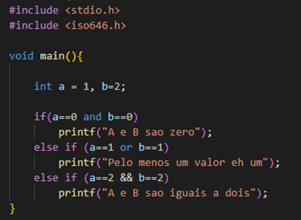

C (1972)
C é uma linguagem de programação de função geral, criada por Dennis Ritchie no início da década de 1970. É uma das linguagens mais antigas e influentes até hoje, sendo amplamente utilizada no desenvolvimento de sistemas operacionais, compiladores, aplicativos de baixo nível e muitos outros tipos de software.

O objetivo principal por trás da criação da linguagem C era oferecer uma linguagem de programação portátil e eficiente, que pudesse ser utilizada para desenvolver software em uma ampla variedade de plataformas e arquiteturas de computadores. Uma das principais características é seu suporte a ponteiros, que permite manipular diretamente a memória do sistema. Essa funcionalidade dá aos programadores um controle preciso sobre alocação de memória, acesso a recursos de hardware e implementação de estruturas de dados eficientes.
Atividade desenvolvida como extensão no projeto
PACEX/Mundo Tech do curso de análise e Desenvolvimento de Sistemas
Unipar - Cascavel